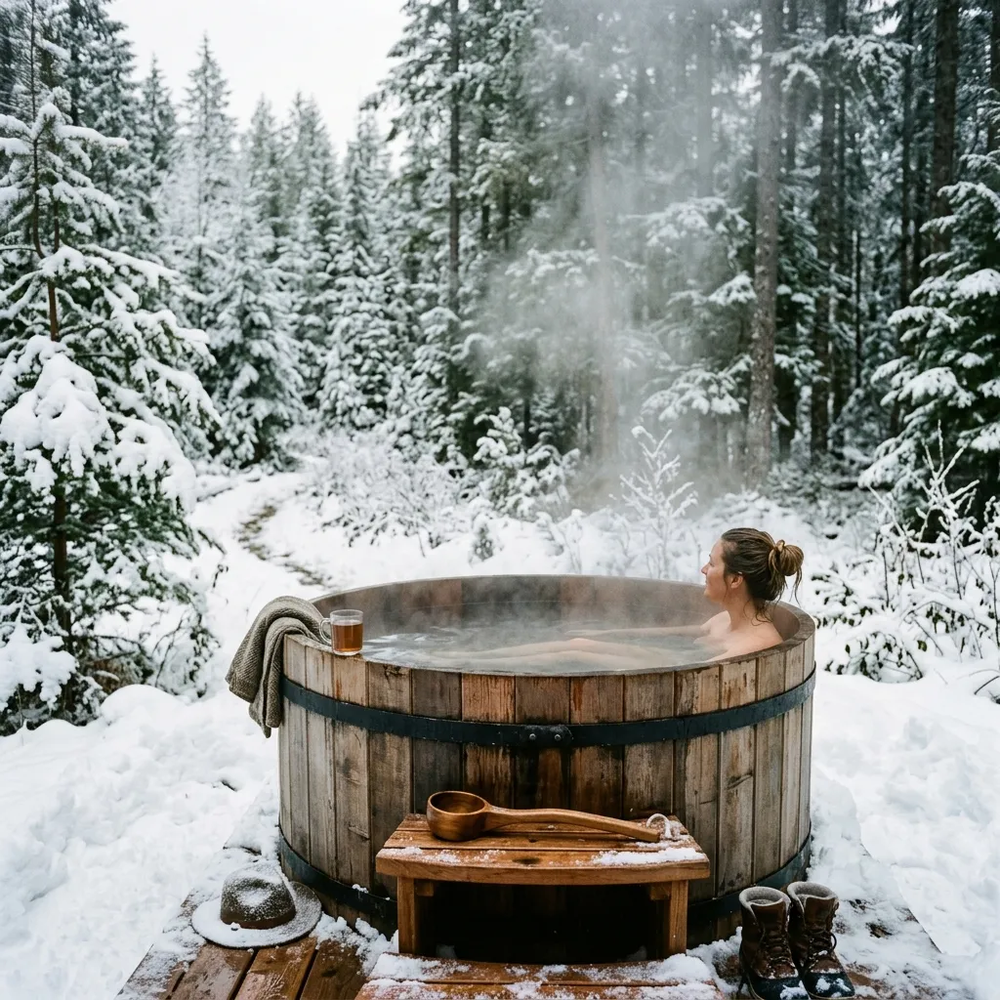

Cedar & Salt
Cedar & Salt

Hand-Coopered Cedar Soaking Tubs and Wood-Fired Thermal Saunas
Cedar & Salt Hydro-Cooperage crafts un-lacquered western red cedar soaking tubs and outdoor saunas for thermal contrast recovery.
Modern fiberglass hot tubs are efficient plastic shells, right up until their synthetic liners off-gas chemical odors and bleach the natural tranquility out of an outdoor soak. We build traditional wooden soaking tubs from clear, vertical-grain western red cedar, bound tightly with hand-hammered stainless steel hoops that rely purely on natural timber expansion to form a watertight seal. When filled with hot water, the raw cedar releases natural thujone and phytoncide resins, surrounding you with the medicinal aroma of a pristine ancient rainforest.
Submit Tub RequisitionStave Cooperage Mechanics & Botanical Phytoncide Infusions
True wooden cooperage is a centuries-old joinery craft that rejects synthetic glues, epoxy coatings, and chemical sealants. Each forty-millimetre thick cedar stave is precision-milled with matching tongue-and-groove compound bevels, allowing the wooden walls to swell together as the timber absorbs water. Heavy 316-grade stainless steel hoops are driven down the tapered exterior using a hand-hammered hoop driver, applying thousands of pounds of circumferential pressure that locks the bottom floor staves seamlessly into the side wall croze grooves.

Because our cedar remains raw and un-lacquered on the interior, hot water penetrates the wood fibers, triggering the release of natural antimicrobial thujone compounds and aromatic phytoncides. These airborne botanical resins act as natural stress-reducers when inhaled during a deep soak, slowing the heart rate and clearing respiratory pathways while the natural insulation of thick cedar holds water temperatures high for hours without drawing power.
Paired with our wild-harvested sub-alpine pine salts and cold-water ocean plunge protocols, a coopered cedar tub provides an authentic thermal contrast experience that restores fatigued muscles after intense mountain efforts. Every tub is hand-assembled in our Revelstoke workshop, air-tested for structural integrity, and built to withstand decades of freezing alpine winters.
The Cooperage & Soaking Dossier
Everything you need to know about traditional coopered soaking tubs in one structured reference.
01. Cedar Grain
We source only the finest clear vertical-grain (CVG) western red cedar from sustainably managed forests in British Columbia. CVG timber is milled perpendicular to the growth rings, which yields a remarkably stable board that resists warping, checking, and twisting even under constant thermal stress and moisture saturation. This structural stability is the foundational secret to a watertight coopered tub, ensuring that the staves swell uniformly to create an impenetrable wooden seal without relying on internal synthetic liners.
Beyond its mechanical superiority, old-growth western red cedar contains extraordinarily high concentrations of natural thujaplicins and water-soluble extractives. These organic compounds are nature's own preservatives, rendering the wood naturally resistant to rot, fungal decay, and insect degradation. When immersed in hot water, these same extractives leach out slowly, giving the water a rich amber tint and filling the surrounding cold air with the unmistakable, deeply therapeutic aroma of the high alpine canopy.
02. Hoop Tension
Our binding system relies on heavy 316-grade stainless steel hoops that encircle the tub. Unlike traditional iron hoops that rust and degrade, marine-grade stainless steel ensures decades of pristine structural integrity in harsh, wet outdoor environments. These bands are secured with heavy-duty threaded cinch bolts that allow the owner to manually adjust the circumferential tension. When the tub is first filled, the cedar staves eagerly absorb the water, expanding rapidly against the unyielding steel bands to lock the precision tongue-and-groove joints into a flawless, watertight seal.
Understanding hoop tension is vital during the initial curing phase of your soaking tub. We ship our tubs slightly under-tensioned to account for the massive outward pressure generated when dry cedar meets water. It is perfectly normal for a new tub to weep slightly through the seams for the first twenty-four to forty-eight hours as the timber drinks and swells. Once maximum saturation is achieved, a final quarter-turn on the cinch bolts permanently locks the architecture in place, requiring almost zero adjustment for the rest of the season.
03. Salt Blends
To elevate the thermal contrast experience, we have formulated the Kootenay Pine-Salt blends, designed explicitly for use in un-lacquered cedar tubs. Standard commercial bath bombs and chemical bubble baths introduce synthetic dyes and harsh detergents that can permanently damage the raw cedar grain and strip away its natural resins. Our bespoke botanical infusions use only coarse Pacific sea salt, organic Epsom minerals, and wild-harvested sub-alpine fir needles, creating a potent mineral soak that respects the integrity of the cooperage while drawing deep lactic acid out of fatigued muscles.
When these raw salts dissolve into the hot cedar water, they create a hyper-tonic environment that mirrors the buoyancy and mineral density of natural geothermal hot springs. The combination of magnesium sulfate and the cedar's own phytoncides creates a powerful holistic remedy for inflammation and joint stiffness. Each batch of salt is hand-mixed in our Revelstoke workshop and packaged in breathable linen sacks that can be steeped directly in the water like a giant tea bag, ensuring a clean soak without leaving abrasive botanical debris on the tub floor.
04. Tub Maintenance
Maintaining a raw wooden soaking tub requires a different philosophy than caring for a plastic jacuzzi. Because we abhor harsh chemical chlorination—which destroys the cedar's natural fibers and ruins the aromatic experience—we recommend non-toxic hydrogen peroxide sanitization protocols. Food-grade hydrogen peroxide breaks down naturally into water and oxygen, effectively oxidizing bacteria and organic matter without leaving behind the acrid chemical smell of bromine or chlorine. This gentle oxidation preserves the wood's natural colour and maintains the purity of the phytoncide release.
Alongside non-toxic sanitization, the physical care of the cedar is incredibly straightforward. The exterior of the tub will naturally weather to a distinguished silver-gray patina if left exposed to the alpine elements, a badge of honour for authentic outdoor cooperage. If you prefer to maintain the warm reddish-brown hue, a simple application of raw linseed or tung oil to the exterior staves once a year provides excellent UV protection. The interior must never be oiled, allowing the raw wood to breathe, swell, and release its therapeutic resins endlessly.
Clear Vertical Grain & Organic Resins
We believe in the material superiority of old-growth western red cedar over sterile plastic or knotty pine. These natural properties provide unmatched rot resistance and aromatic therapeutic resins, ensuring your tub lasts for generations.
Clear Vertical Grain
Our staves feature zero knot inclusions, ensuring uniform expansion to prevent warping and water leaks over decades of use.
Thujone Resins
Natural antifungal and antibacterial oils embedded deep within the timber release slowly, maintaining water purity and providing aromatherapeutic benefits.
Thermal Mass
The dense 40-millimetre thick stave walls act as a formidable natural insulator, retaining heat efficiently even during sub-zero snowstorms.
Our commitment to sustainability dictates that every board of western red cedar we use is sourced according to the strictest British Columbia timber harvesting standards. We work exclusively with certified selective-harvest mills that prioritize the health of the old-growth canopy, ensuring that no clear-cutting is involved in the procurement of our cooperage materials. This ethical sourcing guarantees that the forest ecosystem remains intact while providing us with the incredibly dense, slow-grown timber required for watertight joinery.
The slow growth of these majestic alpine trees results in incredibly tight growth rings, which translates directly to structural stability and thermal retention. When you soak in a Cedar & Salt tub, you are immersed in wood that has weathered centuries of harsh Canadian winters. This embedded resilience is what allows our outdoor tubs to withstand extreme temperature fluctuations—from boiling hot water inside to freezing blizzards outside—without splitting or compromising the seal.
Inspect Wood StandardsWilderness Lodge & Backcountry Installations
Field-proven performance in extreme Canadian winter environments. Our tubs are designed to thrive where conventional plastic spas crack and fail.
Revelstoke Alpine Lodge
Installed at 2,000 metres elevation, this six-person soaking tub operates entirely off-grid via our submerged marine aluminum wood stove, providing reliable recovery for heli-skiing guests in extreme cold.
Whistler Backcountry Cabin
A custom dual-tub installation featuring a hot soak and a chilling cold plunge. The cedar has weathered to a beautiful silver patina, blending perfectly with the surrounding alpine architecture.
Banff Hot-Spring Retreat
A commercial installation of four soaking tubs, utilizing hybrid electric heaters for consistent thermal mass. The natural cedar aromatics have become the signature sensory experience for the retreat.
Deploying a soaking tub in the backcountry requires robust, fail-safe engineering. Our submerged wood-fired stoves are crafted from marine-grade aluminum, designed to transfer heat with incredible efficiency directly into the water. Even in the depths of a -25°C snowstorm, these stoves can bring a fully frozen tub to a steaming 40°C in under three hours using nothing but dry larch or birch cordwood. This off-grid capability ensures that wilderness lodges can offer premium hydrotherapy without relying on fragile electrical grids.
The thermal efficiency of the 40mm thick cedar walls plays a crucial role in these remote environments. Unlike uninsulated plastic shells that bleed heat rapidly to the freezing air, the dense wood acts as a natural thermos. Once the water reaches operating temperature, a simple insulated cedar cover traps the steam, requiring only a few small logs an hour to maintain perfect soaking conditions through the coldest, darkest winter nights.
View Installation GalleryRequisition a Hand-Coopered Soaking Tub
Custom hand-built to your exact dimensions and heating requirements. Complete the form below to begin your consultation with our master coopers.